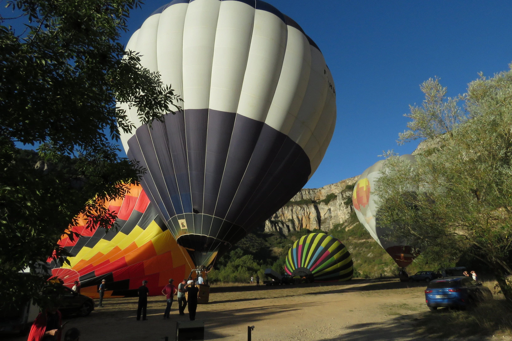

Galerie
Cliquez sur une images pour l'agrandir
Gagnant du concours de photo des Montgolfiades 2023
Mr François Blanc

Nos vidéos
Quand une montgolfière tutoie le viaduc de Millau
Vol en montgolfière au dessus du Viaduc de Millau
Reportage France3 (à partir de 8m10s)